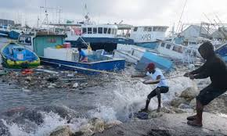

Colonial Calamities(Pre-1900s)
Historical Hurricane Data
The earliest records of Jamaican hurricanes were derived from British observations during the colonial era, including those curated by British meteorologist William Reid and historians Bryan Edwards and Edward Long. In 2003, weather historian Michael Chenoweth developed a reconstruction of Jamaica's climate in the 18th century based on daily records kept by slaveowner Thomas Thistlewood, finding 12 tropical cyclones that produced gale-force or stronger sustained winds between 1750 and 1786 in Savanna-la-Mar. Thistlewood's observations were one of the first continuous weather records outside of Europe and the United States. Wind directions were also documented, with westerlies indicative of nearby tropical disturbances during the summer rainy season. Formal monitoring of hurricanes in Jamaica began with the formation of the Jamaican Weather Service in Kingston in 1880. Between its formation and 1896, the agency observed 38 tropical depressions and issued hurricane warnings three times. Tropical cyclones were important to colonial interests due to their effects on crops and the slave trade.